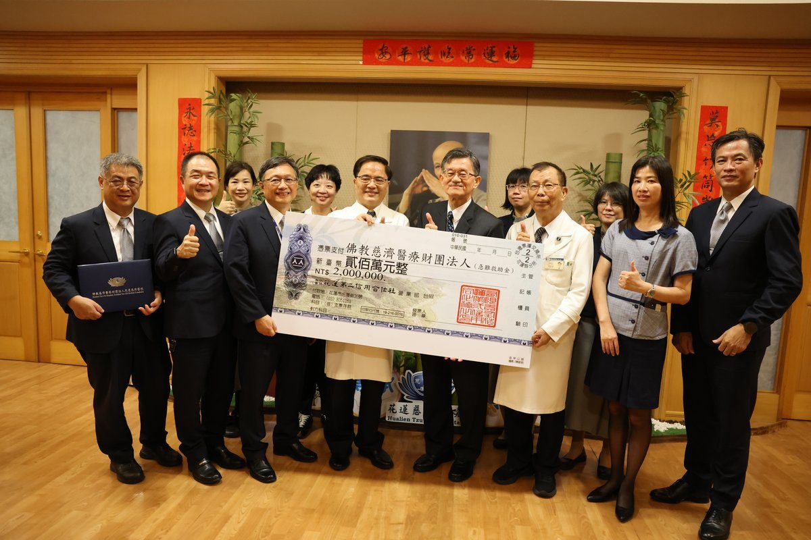

花蓮二信110週年 捐200萬急難救助金助慈院

可樂電子報小編/編輯
花蓮百年老字號在地金融機構「花蓮第二信用合作社」（以下簡稱花蓮二信），今年適逢創立110週年，為回饋在地並體恤弱勢病患，11月3日由理事主席陳怡睿率領、總經理李郅明等團隊，將新臺幣200萬元的「急難救助金」親手交到花蓮慈濟醫院院長林欣榮手中，未來這筆善款將投入弱勢病患的醫療補助。

花蓮慈濟醫院是守護花東地區的醫學中心，用醫療專業守護生命、守護健康的同時，也看見許多弱勢民眾的困苦。以2025年為例，急難及醫療相關補助人次就超過一千七百人次，讓因疾病或意外傷勢而陷入困境的病人與家屬，免受病苦與經濟的雙重煎熬。

林欣榮院長指出，從40年前花蓮慈院篳路藍縷的建院時期開始，花蓮二信就一路相挺，雙方展開長期合作；2016年更捐贈復康巴士，讓醫療團隊能深入東臺灣的暗角。他說：「其實慈濟與花蓮二信的緣分，最早可追溯到證嚴上人創立『佛教克難慈濟功德會』的慈善初期，至今已有60年歷史。」

今年適逢花蓮二信創立110週年，橫跨超過一個世紀的金融機構，與一同在後山發祥的慈濟攜手做公益。陳怡睿表示，花蓮慈院在地深耕40年，對在地民眾乃至全臺、國際病患的付出與心力，各界有目共睹；雙方領域雖然不同，「花蓮慈院做的是醫療服務，花蓮二信做的是金融服務，但我們也想向慈濟學習做到更多的公益活動」。
陳怡睿說：「藉著110週年的契機，決定捐款200萬元。這筆錢雖然不是什麼天大的數目，但它代表了花蓮二信全體同仁對整個花蓮慈濟醫療與慈善公益服務，最深切的敬意與微薄心力。」未來善款將持續守護花東弱勢病患，讓愛心化為實際的醫療支持。
🌟 掌握花蓮在地第一手資訊・歡迎訂閱追蹤
深度紀實報導、在地精采影音專題，第一時間接收最新消息！